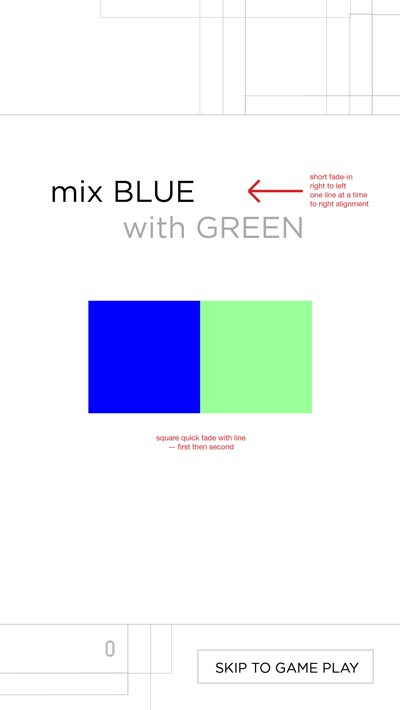
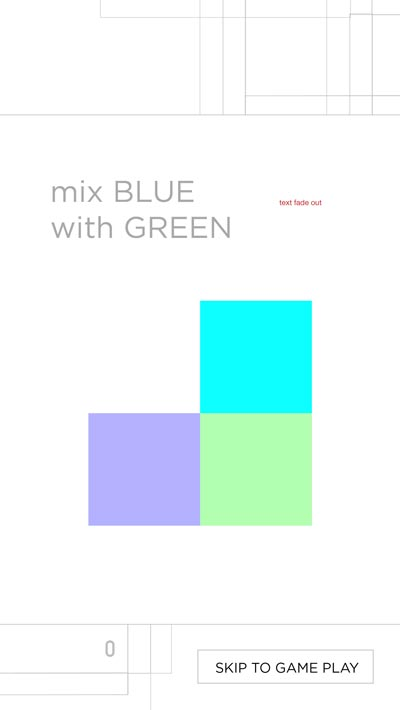

Additive
Additive is a mix-and-match color game to passively teach additive color theory.
Players swipe a red, green or blue square into another square to combine them to make a secondary or tertiary color. (If you are on a computer, instead of swiping, click the first square, then the second.) You earn points if you get two matching secondary or tertiary colors next to each other!
The goal is to see how many points you can earn before a timer reaches zero. As you play, your speed will improve as color mixing becomes more intuitive.
Here is the MVP demo from Angel Hack LA in May 2014.
Taylor Nelson, Joshua Chavez and I jointly worked on the concept. Taylor headed the dev. I mocked up the design.Visual flowchart of the gameplay introduction:


